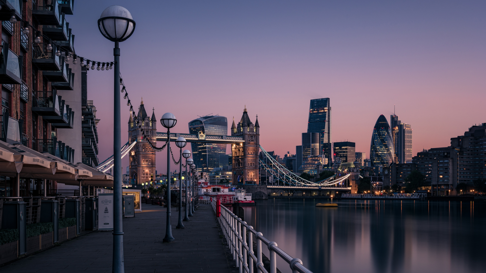
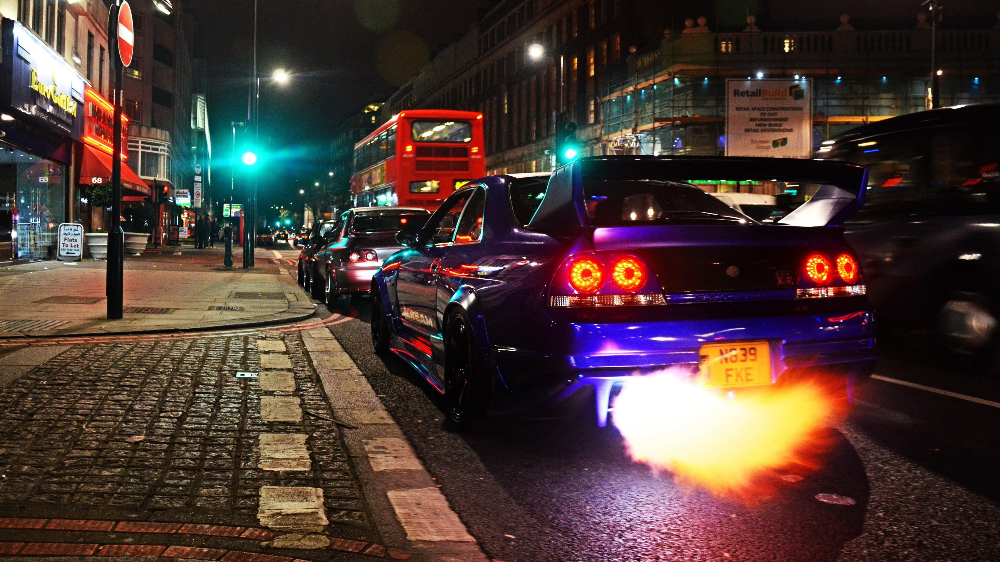
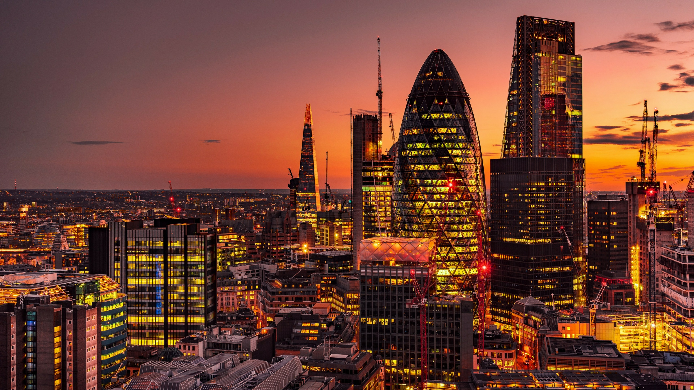
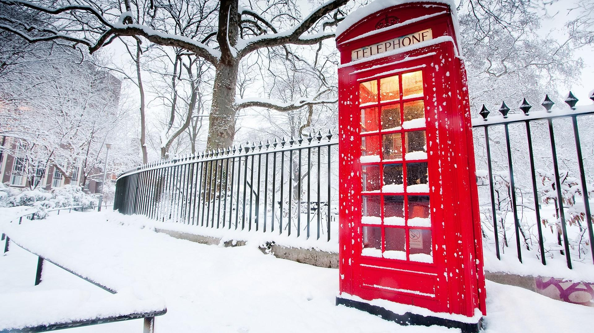

Natural resources
The average annual runoff of the Thames in London is about 15.9 billion cubic meters, with a per capita volume of about 270 cubic meters. The degree of industrialization in London is very high. The development and utilization of water resources is mainly to improve the domestic water consumption of urban and rural people, and to develop industry, inland navigation, aquaculture and water tourism. In 2011, London's forest covered an area of 300,000 hectares, accounting for about 13% of the city's area. London is rich in animal resources, including hedgehogs, harvesting rats and sparrows. The main mineral resources in London are coal, iron, oil and natural gas. The total reserves of hard coal are approximately 17 billion tons.


Science, Education and Culture
At the same time, London is the most important cultural, educational, sports and technological center in the world. The number of museums, libraries, cinemas and stadiums in London ranks first in the world. It is the only city in the world that has hosted the Olympic Games three times. It has the world's most famous film festivals, music festivals, fashion weeks and the largest number of higher education institutions. And well-known universities, ranked the best cities in the world for studying abroad.
Of the 53 new technology companies with a market value of more than $1 billion in Europe, 22 are located in London. According to data from the Office of the Mayor of London, British technology companies attracted a record high of venture capital investment in 2017, nearly 3 billion pounds, of which London technology companies attracted 2.45 billion pounds of investment, accounting for 82% of the country. In 2017, London attracted far more funds than any other major European city, almost four times that of Germany, and more than France, Ireland and Sweden combined.

Local specialty
Arugula is also known as Arabidopsis thaliana, also known as Brassica juncea, German mustard, etc. It is named after its fresh leaf juice has a sesame fragrance. It is widely produced in continental Europe and is one of Londoners' favorite seasonal vegetables.
Haggis is a traditional food similar to big sausages. It is called haggis pudding by the locals. It is made by mashing haggis, mixing with other condiments, filling it with pig intestines, and steaming it.
